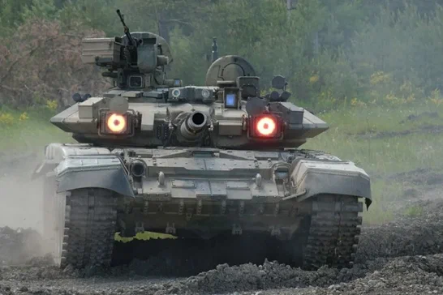

Сухопутные силы
Броня, огонь и мобильность
Ниже собраны ключевые образцы сухопутной техники. Карточки сделаны более контрастными и читаемыми, чтобы техника выглядела как отдельный экспонат.
Т-14 Армата

Т-14 Армата - это российский основной боевой танк, разработанный на платформе "Армата". Он был представлен в 2015 году и является одним из самых современных танков в мире. Т-14 оснащен передовыми технологиями, включая автоматическую систему управления огнем, активную защиту и высокую мобильность.
Танк имеет мощное вооружение, включая 125-мм гладкоствольную пушку, которая может использовать различные типы боеприпасов. Он также оснащен пулеметом и противотанковыми ракетами. Т-14 Армата обладает высокой степенью защиты благодаря композитной броне и активной защите, которая может обнаруживать и уничтожать угрозы до того, как они достигнут танка.
Т-14 Армата является важным элементом вооруженных сил России и играет ключевую роль в обеспечении безопасности и обороны страны. Его разработка и производство продолжаются, чтобы обеспечить современное вооружение для российских войск.
Технические характеристики Т-14 Армата:
- Масса: около 48 тонн
- Длина: 10,8 метра
- Ширина: 3,5 метра
- Высота: 3 метра
- Экипаж: 3 человека
- Вооружение: 125-мм гладкоствольная пушка, 7,62-мм пулемет, противотанковый ракетный комплекс с моделем 'Атака-Т'
- Максимальная скорость: около 80 км/ч
- Запас хода: около 500 км
Заключение
Т-14 Армата является мощным и многофункциональным танком, который обеспечивает высокую защиту и огневую поддержку на поле боя. Его технические характеристики делают его эффективным инструментом для выполнения различных боевых задач, и он продолжает играть важную роль в вооруженных силах России.
Подробнеесемейство Т-90

Т-90:
Т-90 - это российский основной боевой танк, который является развитием предыдущих моделей Т-72 и Т-80. Он был разработан для обеспечения высокой боевой эффективности на поле боя и оснащен современными системами вооружения и защиты.
Т-90 имеет мощное вооружение, включая 125-мм гладкоствольную пушку, которая может использовать различные типы боеприпасов, включая бронебойные и кумулятивные снаряды. Он также оснащен современными системами управления огнем, что позволяет эффективно поражать цели на больших расстояниях.
Т-90 обладает высокой маневренностью и проходимостью, что позволяет ему эффективно действовать в различных условиях на поле боя. Он также оснащен современными системами защиты, включая динамическую броню и активные системы защиты, что обеспечивает высокую выживаемость экипажа.
Технические характеристики Т-90:
- Масса: около 48 тонн
- Длина: 7,2 метра
- Ширина: 3,4 метра
- Высота: 2,9 метра
- Экипаж: 3 человека
- Вооружение: 125-мм гладкоствольная пушка, 7,62-мм пулемет, противотанковый ракетный комплекс с моделем 'Атака-Т' и также 40-мм автоматический гранатомет АГС-17
- Максимальная скорость: около 60 км/ч
- Запас хода: около 550 км
Т-90К

Т-90К - это командирская версия танка Т-90, созданная для управления подразделением и координации действий на поле боя.
Главное отличие этой модификации - дополнительные средства связи, навигации и рабочее место командира, что делает управление техникой удобнее и быстрее.
Технические характеристики Т-90К:
- Экипаж: 3 человека
- Назначение: командование танковым подразделением
- Связь: усиленные радиосредства для передачи приказов
- Навигация: дополнительное оборудование для ориентации на местности
- Особенность: улучшенная координация боя и управление связью
Т-90C

Т-90C - этот вид использовался для экспорта и отличался от стандартной версии Т-90 более мощным вооружением и улучшенной системой защиты.
БМПТ-90

БМПТ-90 (Боевая Машина Бронетранспортер) - это российская боевая машина, разработанная для перевозки пехоты и обеспечения огневой поддержки на поле боя. Она оснащена мощным вооружением и броней, что делает ее эффективной в различных боевых условиях.
БМПТ-90 имеет высокую проходимость и может преодолевать различные препятствия, что позволяет ей эффективно выполнять задачи в различных условиях. Она также оснащена современными системами связи и навигации, что обеспечивает эффективное взаимодействие с другими подразделениями на поле боя.
БМПТ-90 является важным элементом вооруженных сил России и играет ключевую роль в обеспечении безопасности и обороны страны. Ее разработка и производство продолжаются, чтобы обеспечить современное вооружение для российских войск.
Технические характеристики БМПТ-90:
- Масса: около 48 тонн
- Длина: 7,2 метра
- Ширина: 3,4 метра
- Высота: 2,9 метра
- Экипаж: 3 человека + 7 десантников
- Вооружение: 30-мм автоматическая пушка, 7,62-мм пулемет, противотанковый ракетный комплекс с моделем 'Атака-Т' и также 40-мм автоматический гранатомет АГС-17
- Максимальная скорость: около 60 км/ч
- Запас хода: около 550 км
Заключение
БМПТ-90 является мощной и многофункциональной боевой машиной, которая обеспечивает высокую защиту и огневую поддержку для пехоты на поле боя. Ее технические характеристики делают ее эффективным инструментом для выполнения различных боевых задач, и она продолжает играть важную роль в вооруженных силах России.
Подробнее